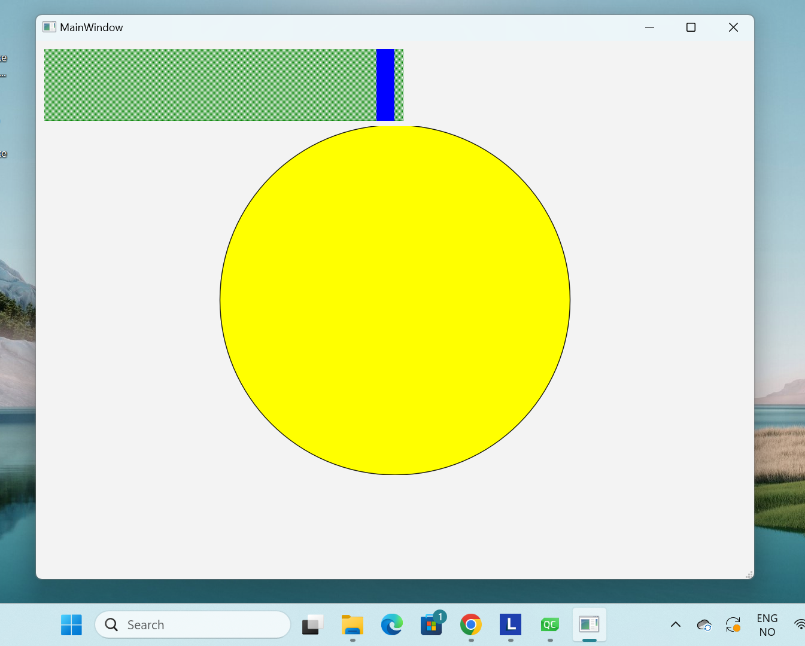
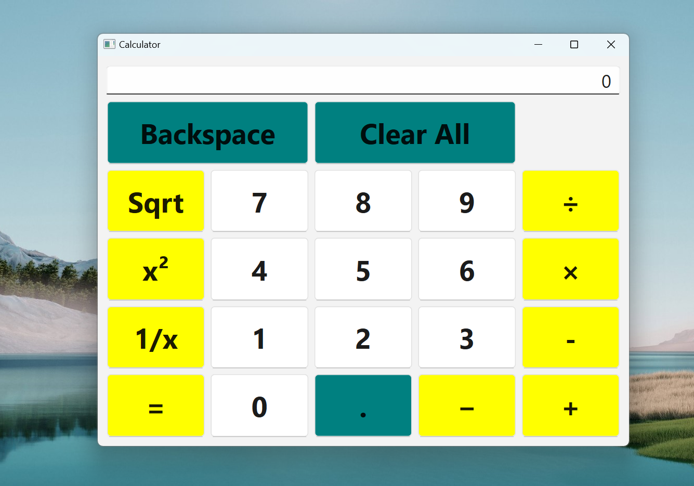
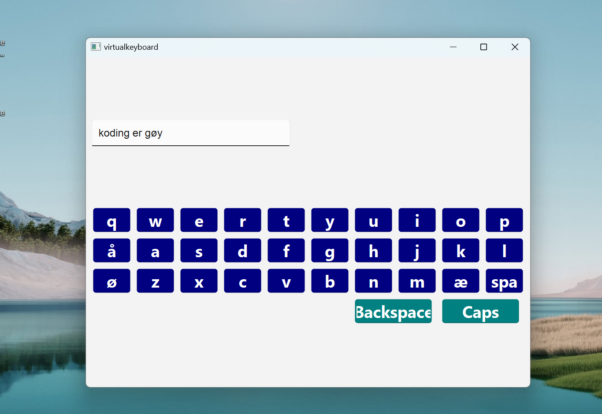

Welcome to my demo page about C++ and Qml (Qt)
My name is Quoc and i am a software developer. I will show you some demo applications in C++ (Qt) and QML (Qt). 
https://github.com/nguyennguyen-wq/paintingproject.git
https://github.com/nguyennguyen-wq/Qmlcalculator.git

https://github.com/nguyennguyen-wq/calculatorCPP.git

The first demo project is a C++ (Qt) project. This will paint a circel and this circel will resize when a scrollbar is select. You can see this demo in screen shoot and also a MP4 video below.
You can find the codes for this project in my github repo link below
The second demo project is a calculator, i will use Qml and javascript for this project. You can see this demo in a MP4 video below.
You can find the codes for this project in my github repo link below
The next demo project is also a calculator, but for this i will use C++ (Qt) for this project. You can see this demo in a MP4 video and screen shot below.
You can find the codes for this project in my github repo link below
The next demo project is a keyboard in norwegian. I will use C++ (Qt) for this project. You can see this demo in a MP4 video and screen shot below.
You can find the codes for this project in my github repo link below